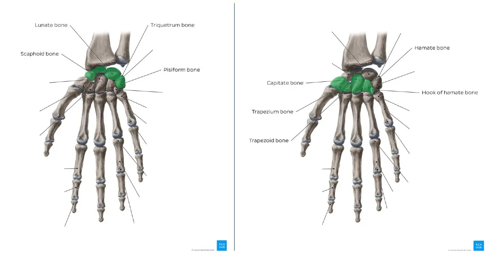

Human Anatomy · 6111
Module 13 — Elbow, Wrist & Hand — Bones, Joints, Ligaments
Topics: 13.1 Osteology • 13.2 Joints • 13.3 Ligaments (elbow → forearm → wrist → hand)
📖 How to Use These Notes
- Best used with the lecture playing — keep these open, follow along, and add your own notes as you watch
- Lecture banners mark the start of each topic and run in the same order as the videos
- 🎙 Callouts = direct insights from the instructor's transcript
- ★ Tips = exam-relevant content or things the instructor told you to prepare
- Figures are taken directly from the module's slide decks
- Each topic ends with its own Quick-Reference Glossary
- Written from last year's recordings — if a lecture has been re-recorded or resequenced, Canvas wins
- Three lectures, one region: every bone landmark exists to explain a joint, and every joint shape exists to explain a ligament — study them as one chain
- The wrist/hand ligament lists look brutal, but the instructor says it directly: know the GROUPS and their functions, not every individual name
- Four clinical spotlights carry the clinical weight: Colles fracture, scaphoid fracture, nursemaid's elbow, and the UCL/Tommy John story
- Musculature and neurovasculature for this region arrive in Module 14 — this module is purely the passive structures
TOPIC 13.1
Osteology — Distal Humerus, Radius, Ulna, Carpals, Metacarpals, Phalanges
1. Distal humerus
| ARTICULAR STRUCTURES | NON-ARTICULAR STRUCTURES |
|---|---|
| Trochlea — pulley-shaped; covers the anterior, inferior, AND posterior medial condyle → proximal half of the humeroulnar joint | Three fossae ("sockets" for the forearm bones): olecranon fossa (posterior, above trochlea), coronoid fossa (anterior, above trochlea), radial fossa (anterior, above capitulum) |
| Capitulum — convex, rounded; anterior + inferior lateral condyle only (no posterior coverage needed — the radial head never travels there) → proximal half of the humeroradial joint | Medial + lateral supracondylar ridges — distal thickenings for forearm muscle attachment |
| Medial epicondyle — the last ossification center of the elbow (not fully ossified until ~14–15 y/o → common adolescent injury site), with the groove for the ulnar nerve on its posterior side | |
| Lateral epicondyle — palpable but less prominent |
2. Radius (lateral forearm bone — small proximal end, broad distal end)
| Region | Landmarks |
|---|---|
| Proximal end | Head — disc-shaped with a concave top for the capitulum; its articular circumference sits in the ulna's radial notch, wrapped by the annular ligament. Neck below the head. Radial (bicipital) tuberosity — medially oriented, biceps insertion |
| Shaft | Triangular in cross-section; anterior, posterior, and sharp interosseous borders (interosseous membrane to the ulna); anterior, posterior, lateral surfaces; slight lateral curvature |
| Distal end | Ulnar notch — receives the ulnar head (distal radioulnar joint). Radial styloid process — lateral, projects inferiorly. Dorsal (Lister's) tubercle — posterior, between extensor tendon grooves |
Clinical spotlight: Colles fracture
- Complete transverse fracture of the distal ~2 cm of the radius — the most common forearm fracture
- Mechanism: forced wrist extension, usually a fall on an outstretched limb
- Produces the classic "dinner fork" deformity from dorsal displacement of the distal fragment
3. Ulna (medial forearm bone — dimensions reversed: big proximal, small distal)
| Region | Landmarks |
|---|---|
| Proximal end | Olecranon — posterior projection, triceps insertion; its beak lodges in the olecranon fossa at full extension (your normal bony end-feel, and the hyperextension block). Trochlear notch — C-shaped, grips the trochlea "like the jaws of a wrench." Coronoid process — the notch's lower lip; lodges in the coronoid fossa in flexion. Sublime tubercle — medial coronoid, UCL attachment. Radial notch — lateral, receives the radial head. Ulnar tuberosity — brachialis insertion |
| Shaft | Anterior, posterior (palpable olecranon → styloid along the pinky side), and sharp interosseous borders; supinator crest + fossa near the radial notch — supinator origin |
| Distal end | Small round head — articulates with the radius's ulnar notch, but is separated from the carpals by the articular disc (no direct wrist articulation). Ulnar styloid process — posteromedial, palpable dorsomedially |
4. Carpals — 8 irregular bones, 2 rows

| Bone (radial → ulnar) | What to know |
|---|---|
| Scaphoid | Largest of the proximal row; boat-shaped with a palmar scaphoid tubercle. Most commonly fractured carpal (FOOSH) |
| Lunate | Moon-shaped, next to the scaphoid |
| Triquetrum | Pyramid-shaped, most medial; carries an oval facet for the pisiform |
| Pisiform | Pea-shaped sesamoid embedded in the flexor carpi ulnaris tendon; superficial and easily palpated |
| Trapezium | Articulates with metacarpal 1 — the thumb's mobility bone; palmar tubercle + groove |
| Trapezoid | Wedge-shaped; looks small from the palm but widens dorsally |
| Capitate | Largest carpal, centrally located — your landmark for finding the others during intercarpal mobilizations (useful after immobilization for a Colles fracture) |
| Hamate | Most medial of the distal row; its hook forms the medial carpal tunnel wall and the lateral wall of Guyon's canal |
Clinical spotlight: scaphoid fracture
- Same FOOSH mechanism as a Colles fracture — the two can coexist
- Presents as tenderness in the anatomical snuffbox
- Feared complication: avascular necrosis, because the scaphoid's blood supply enters distally and a waist fracture can starve the proximal fragment
5. Metacarpals and phalanges
- Metacarpals (5): classified as long bones despite their size — each has a wide base (articulates with the distal carpal row), a body (flat dorsal triangle; concave palmar surface for palm muscles), and a rounded head (your knuckles, articulating with the proximal phalanges).
- Base quirks worth knowing: MC1 has a saddle-shaped base for the trapezium (thumb dexterity); MC5's base is quadrangular for the hamate with a lateral tubercle that's non-articular (extensor carpi ulnaris attachment).
- Phalanges (14): 5 proximal, 4 middle (the thumb has no middle phalanx), 5 distal — each with base, body, head. Proximal heads are pulley-shaped for the PIP joints; distal phalanges are short, thick, and rough on the palmar side for the strong finger flexor attachments.
TOPIC 13.2
Joints — Elbow, Forearm, Wrist, Hand
6. Elbow joint — one capsule, two articulations
A compound synovial joint, functionally a hinge (flexion/extension only). Blood supply: ulnar collateral, radial collateral, and middle collateral arteries proximally; radial recurrent and ulnar recurrent arteries distally.
| Articulation | Surfaces | Mechanics from lecture |
|---|---|---|
| Humeroulnar (medial) | Trochlea ↔ trochlear notch | The notch cups the trochlea like a wrench; in extension the olecranon lodges in its fossa (bony end-feel, hyperextension block); in flexion the coronoid process lodges in the coronoid fossa |
| Humeroradial (lateral) | Capitulum ↔ radial head | The concave radial head slides on the convex capitulum — inferior surface in extension, anterior in flexion, with the radial fossa accommodating the head at full flexion |
7. Forearm joints — the pronation/supination pair
- Proximal radioulnar joint — pivot; head of radius spins in the radial notch of the ulna.
- Distal radioulnar joint — pivot; ulnar notch of the radius rotates around the head of the ulna. In both, it's the radius that moves around a stationary ulna — crossing over it in pronation, uncrossing in supination.
8. Radiocarpal (wrist) joint
A synovial ellipsoid joint: distal radius + the TFCC's articular disc proximally (the ulna never touches the carpals directly) against the scaphoid, lunate, and triquetrum distally. Movements: flexion, extension, radial deviation (abduction), ulnar deviation (adduction). Blood: dorsal + palmar carpal arteries. Nerves: anterior + posterior interosseous nn., deep and dorsal ulnar branches.
9. Hand joints
| Joint | Type | Movements |
|---|---|---|
| Intercarpal (incl. midcarpal) | Synovial plane; biaxial — proximal row ↔ distal row plus bone-to-bone within each row | Small glides summing to flexion/extension, ab/adduction, circumduction — the dexterity reserve of the wrist |
| CMC 1 (trapeziometacarpal) | Synovial saddle; multiaxial (trapezium ↔ base of MC1 — two Pringles stacked) | Flexion/extension, ab/adduction, and opposition — the thumb's signature |
| CMC 2–3 | Structurally ellipsoid/complex saddle; functionally plane | Limited A-P gliding (locked in by neighboring carpals) |
| CMC 4 | Capitate + hamate ↔ MC4 | Flexion/extension — more mobile toward the ulnar side |
| CMC 5 | Hamate ↔ MC5 (partial articulation) | Flexion/extension + a little internal/external rotation — the most mobile finger CMC |
| Metacarpophalangeal (MCP) | Synovial condyloid (metacarpal head ↔ phalangeal base) | Flexion/extension, ab/adduction (reference line = middle finger), circumduction |
| Interphalangeal (PIP/DIP) | Synovial hinge; uniaxial | Flexion/extension only. PIP = proximal↔middle phalanx (digits 2–5); DIP = middle↔distal; the thumb has a single IP joint |
TOPIC 13.3
Ligaments — Elbow, Forearm, Wrist, Hand
10. Elbow ligaments
| Ligament | Structure & function |
|---|---|
| Annular (lateral) | Encircles the radial head, inserting on the anterior + posterior margins of the ulna's radial notch; blends with the capsule proximally, attaches loosely to the radial neck distally. Holds the radial head against the ulna and up against the capitulum |
| Radial collateral (lateral) | Y-shaped: lateral epicondyle → annular ligament (both arms), some fibers to the supinator crest. Resists varus stress (lateral gapping) |
| Ulnar collateral (medial) | Three-part triangle: anterior band (medial epicondyle → medial coronoid/sublime tubercle) — strongest and most taut; posterior band (medial epicondyle → medial olecranon); inferior/transverse band (coronoid ↔ olecranon, roofing the trochlear notch). Resists valgus stress |
Two clinical spotlights at the elbow
- Nursemaid's elbow — preschoolers (especially girls) jerked up by a pronated forearm: the annular ligament's loose distal attachment tears, the radial head subluxes distally and pinches the ligament. Reduction: supinate the forearm with the elbow flexed
- Tommy John procedure — the UCL reconstruction named for repetitive valgus/torsional overload in pitchers that ruptures the ligament
11. Forearm connective tissue
- Interosseous membrane — dense fibrous sheet between the two interosseous borders; separates anterior from posterior compartments (hence the interosseous nerve names), binds radius to ulna, and prevents the bones separating under upper-extremity weight-bearing.
- Palmar radioulnar ligament — radius → ulnar head anteriorly; checks the end of supination. Dorsal radioulnar ligament — posterior counterpart; checks the end of pronation.
12. Wrist ligaments — learn the groups, not the roster
| Group | From → to | Job |
|---|---|---|
| Palmar radiocarpal (4 parts) | Palmar distal radius → scaphoid, lunate, capitate | Limits wrist hyperextension. Palmar ligaments are far more numerous and thicker than dorsal |
| Palmar ulnocarpal (3–4 parts) | TFCC margin/ulna → capitate, lunate, triquetrum, pisiform | Also resists hyperextension, from the ulnar side |
| Dorsal radiocarpal | Lister's tubercle → lunate + triquetrum | Thinner and weaker; limits hyperflexion |
| Radial collateral | Radius → scaphoid + trapezium | Restricts ulnar deviation |
| Ulnar collateral | Ulnar head → triquetrum + hamate | Restricts radial deviation |
| Flexor retinaculum | Scaphoid tubercle + trapezium ridge (radial) → pisiform + hook of hamate (ulnar) | Roofs the carpal tunnel — the median nerve's passage, and the site of carpal tunnel syndrome |
Triangular fibrocartilage complex (TFCC)
The load-bearing suite of the ulnar wrist: articular disc + ulnomeniscal homologue + ulnar collateral ligament + dorsal/palmar radioulnar ligaments + ECU tendon sheath (plus the ulnolunate/ulnotriquetral parts of the palmar ulnocarpal ligament). The disc attaches from the ulnar edge of the radius's lunate fossa to the ulnar head/styloid and works like a meniscus: it fills the ulna-to-carpals gap, transmits and distributes axial load from carpals into the ulna, prevents ulnocarpal abutment, stabilizes both radiocarpal and distal radioulnar joints, and smooths circumduction.
13. Hand ligaments
- Carpal/metacarpal level: palmar, dorsal (thinner, Z-pattern), and interosseous ligaments stabilize the carpals — the distal-row interosseous set is stronger and less injury-prone than the proximal. Course-level expectation: know the groups exist and what they stabilize.
- MCP and IP joints get the detail because they're injured more often — longer levers, more tension, less reinforcement.
| MCP / IP ligament | What it does |
|---|---|
| Proper collateral (cord-like) | Dorsolateral metacarpal head → palmar base of proximal phalanx; tightens in flexion → limits flexion |
| Accessory collateral (fan-like) | Metacarpal head → distal third of the volar plate; tightens in extension; with the proper collateral also limits ab/adduction |
| Palmar ligament (volar plate) | Dense fibrocartilage thickening of the palmar capsule — loose on the metacarpal neck, firm on the phalangeal base; prevents hyperextension (thumb's plate carries two sesamoids). IP versions are U-shaped "check-rein" ligaments doing the same job |
| Deep transverse metacarpal | Narrow bands linking the palmar MCP joints 2–5 (anterior to interossei, posterior to lumbricals); stops the metacarpals spreading apart during grip |
| Annular + cruciform (pulleys) | Tunnel the finger flexor tendons to the phalanges — prevent bowstringing (Module 14 picks these up with the flexors) |
Clinical spotlight: skier's / gamekeeper's thumb
- Rupture or chronic laxity of the ulnar collateral ligament of the thumb's MCP joint
- Mechanism: forced radial deviation of the thumb — classically against a planted ski pole
- Costs the thumb its stable post for pinch grip
PATIENT CASES
The Sync-Session Cases, Worked
Case 1 — 6-year-old FOOSH, normal X-rays, snuffbox tenderness
- FOOSH = Fall On OutStretched Hand. Force travels hand → wrist → forearm → elbow → shoulder, so any joint along the chain can be hurt.
- Bones at risk: scaphoid and lunate in the carpus; the radius is the primary axial-force transmitter from hand to elbow.
- Joints: radiocarpal is the weight-bearing wrist articulation; proximally the elbow (especially humeroradial) and even the GH joint can take the load.
- Ligament: the scapholunate ligament is the classic FOOSH casualty — and ligaments tear without any fracture showing on radiographs, which is why "normal X-rays" never clears the wrist.
- Why the snuffbox matters: tenderness there = scaphoid until proven otherwise, because of the avascular-necrosis risk. Painful pronation/supination points to transmitted stress through both radioulnar joints.
Case 2 — Warehouse worker, medial elbow pain after a fall: UCL sprain
- Mechanism: falling on an abducted arm with the elbow near extension drives the forearm laterally → valgus force. Resisters: UCL, capsule, and the flexor-pronator muscle group.
- Anatomy on exam: medial articulation = trochlea ↔ trochlear notch; palpate the medial epicondyle and olecranon proximally, the sublime tubercle/medial coronoid margin distally.
- The injured structure: the UCL — specifically its anterior band, the primary valgus restraint from mid-flexion into extension.
- Why motion survives but end-range extension hurts: ligaments give passive stability, not motion — and the UCL is most stressed near extension, where bony congruency contributes least.
- Screen the ulnar nerve: it runs in its groove right behind the medial epicondyle, so swelling and altered mechanics after UCL injury can irritate it.
Module 13 — Quick-Reference Glossary
| Term | Definition |
|---|---|
| Trochlea / capitulum | Medial pulley for the ulna; lateral ball for the radius |
| Sublime tubercle | Medial coronoid bump — anterior UCL band insertion |
| Lister's (dorsal) tubercle | Distal radius landmark between extensor tendon grooves; dorsal radiocarpal ligament origin |
| Supinator crest & fossa | Proximal ulna origin of the supinator |
| Anatomical snuffbox | Tenderness here = suspect scaphoid fracture |
| Hook of hamate | Medial carpal tunnel wall; lateral Guyon's canal wall |
| TFCC | Disc + ligaments + ECU sheath — the ulnar wrist's meniscus and DRUJ stabilizer |
| Volar plate | Palmar fibrocartilage plate blocking MCP/IP hyperextension |
| Nursemaid's elbow | Radial head subluxation out of the annular ligament in yanked toddlers — supinate + flex to reduce |
| Tommy John | UCL reconstruction after valgus overload in throwers |